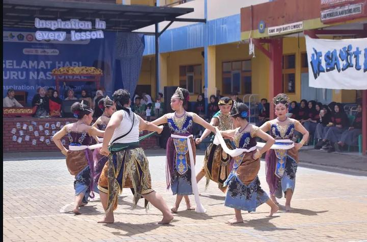

Welcome to Future Education
SMK Budi Bakti Ciwidey adalah salah satu lembaga pendidikan yang beralamat di Jl. Raya Ciwidey No. 123, Indonesia. Sekolah ini berdiri sejak 16 Februari 1972 di bawah naungan Yayasan Budi Bakti dengan status akreditasi A.
Kurikulum Berkarakter
Siap Kerja & Siap Kuliah
Fokus Akademik & Non-Akademik

Kunjungan Industri

Upacara Bendera

Pelaksanaan Ujikom

Kegiatan Ekstrakurikuler
Memiliki Lab komputer yang nyaman dan lengkap.
Bekerjasama dengan Berbagai Perusahaan untuk Peluang Magang/PKL.
Kurikulum Berbasis Industri membekali siswa terampil kerja.
Didukung Oleh Tenaga Pendidik Berpengalaman dibidangnya.
Daftarkan diri anda sekarang dan jadilah bagian dari generasi kreatif, inovatif, dan siap menghadapi dunia kerja.